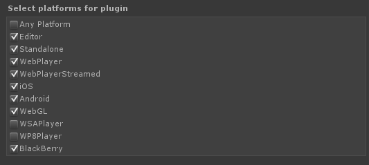

Troubleshooting
Topics:
- Something isn't working...
- My controller doesn't work
- Input problems in the the Unity editor
- XBox 360 controller L/R triggers can't be pressed at the same time on Windows
- Joystick control doesn't work
- Keyboard control doesn't work
- Mouse control doesn't work
- More than 4 XBox controllers doesn't work
- Null reference exception when recompiling scripts in the editor at runtime
- Unity 5 compile errors in PS4, XBox One, or other special platforms
Something isn't working...
The single most common solution to a wide variety of support questions:
- Do you have warnings enabled in the Unity console?
Ensure warnings are enabled in the Unity console so you can see important messages created by Rewired for a variety of common situations. You should also have normal log messages and errors enabled. This can save a lot of time and back and forth questions.

My controller doesn't work
If you're using a controller that is not listed here, your controller doesn't have a hardware definition and will not automatically be recognized and mapped. Instead, it will use the Unknown Controller map and need to be manually mapped by the user prior to use through a custom control remapping screen. Please read about the Unknown Controller map and how unrecognized controllers are handled to understand why.
My gamepad doesn't work. I created a map using the Dual Analog Gamepad Template but it doesn't work.
Just because a controller is a gamepad does not mean Rewired will recognize it as a gamepad. Just what a "gamepad" is varies from product to product. There is no universal definition of a gamepad. The Dual Analog Gamepad Template only applies to controllers that have had definitions created for them and have been specifically assigned and configured for that template. If you want to use a gamepad that is not listed here, you either have to make a controller definition for it and add it to the Dual Analog Gamepad Template or provide your users with a control remapping screen so they can map the controls themselves.
Input problems in the Unity editor
Be sure you've got the right build target set in the editor. Rewired will not use native input sources for Windows or OSX in the editor if the build target is set to a different platform. It will warn you about this when you press play, so be sure you've set the console to display warnings in the editor.
XBox 360 controller L/R triggers can't be pressed at the same time on Windows
This is a design issue with the Microsoft XBox 360 controller driver. The XBox 360 controller driver only returns a single byte of data for both the left and right triggers making it impossible to distinguish the two when both are pressed simultaneously when using Raw Input or Direct Input. You can read about this issue and the reasoning behind the design here.
The solution is to enable XInput in the Rewired Editor - Settings. XInput is able to treat the triggers as separate values.
Joystick control doesn't work
- Did you create one or more Players in the Rewired input manager?
- Is Auto-assign Joysticks enabled in the Rewired Input Manager Settings page or have you manually assigned joysticks to the Player(s) during runtime through scripting?
- Did you create any Joystick Maps compatible with the controller(s) you're using?
- Did you assign those Joystick Maps to your Player(s) on start?
- Are those Joystick Maps enabled on start in the Player(s)?
- Is the joystick you're using a recognized controller? If not, please read about the Unknown Controller map and how unrecognized controllers are handled.
- Please go through the Quick Start guide and ensure you haven't missed any steps.
Keyboard control doesn't work
- Did you create one or more Players in the Rewired input manager?
- Did you create any Keyboard Maps?
- Did you assign those Keyboard Maps to your Player(s) on start?
- Are those Keyboard Maps enabled on start in the Player(s)?
- Please go through the Quick Start guide and ensure you haven't missed any steps.
Mouse control doesn't work
- Did you create one or more Players in the Rewired input manager?
- Did you create any Mouse Maps?
- Did you assign those Mouse Maps to your Player(s) on start?
- Are those Mouse Maps enabled on start in the Player(s)?
- Did you check "Assign Mouse on Start" in the Player(s) you want to have access to the mouse or assign the mouse manually to the Player(s) during runtime through scripting?
- Please go through the Quick Start guide and ensure you haven't missed any steps.
More than 4 XBox controllers doesn't work
Windows
XInput has a hard limit of 4 devices. You can mix and match non-XInput devices with XInput devices for a total of more than 4, but you cannot use more than 4 XInput compatible devices simultaneously if XInput is enabled. If you need to support more than 4 XInput controllers, you must disable XInput in the Rewired Editor - Settings page.
OSX
XBox 360 controllers on OSX require the Tattie Bogle XBox 360 driver. This driver also imposes the 4-device limit just like XInput. It is currently not possible to use more than 4 XInput devices simultaneously on OSX. Again, you can mix and match non-XInput controllers to achieve a total count greater than 4. Because the driver is required for the controller to be detected, there is no way to disable the use of this driver and get around this issue.
Null reference exception when recompiling scripts in the editor at runtime
NOTE: This information only applies to runtime recompiling in the editor while in Play mode. If you don't need this functionality, you do not need to do any of the following.
Null reference exceptions thrown during a recompile are a result of a script not checking if Rewired is ready before attempting to access properties or methods of the ReInput class.
If your workflow requires that you edit scripts during runtime, you should be aware that once recompile is triggered, the main Rewired managing class is destroyed and recreated. All Player, Controller, and other references are no longer valid. Due to the sheer complexity of Rewired (native input for example), runtime data is not serialized and therefore seamless resuming from a runtime recompile is not supported (see below for details). To prevent your scripts from throwing null reference exceptions when you recompile during runtime, you should be checking ReInput.isReady to determine if the system is initialized at the beginning of your input update.
Code patterns that survive runtime recompiles:
Pattern 1: Get Rewired Player every update
using UnityEngine;
using Rewired;
public class RecompileTest : MonoBehaviour {
void Update () {
if(!ReInput.isReady) return; // check if Rewired is ready (if false, editor is compiling)
// Do input processing
Player p = ReInput.players.GetPlayer(0); // get the Player object every update
Debug.Log(p.GetButton("Fire"));
}
}
- By checking ReInput.isReady at the beginning of the update and exiting if it's not ready, you avoid null references while Unity is recompiling.
- Never make any calls to any Rewired classes while the editor is recompiling (ReInput.isReady == false).
- By getting the Player every update and not storing it, you don't have to worry about it going out of scope after a recompile.
Pattern 2: Caching Rewired Player
This pattern allows you to cache your Player object on Awake and not have to get the Player each update. However, when recompiling, you must get a new reference to the Player object after compiling is finished because the original object is no longer valid.
public int playerId = 0;
private Rewired.Player player;
private bool isRecompiling;
void Awake() {
CacheRewiredPlayer();
}
void Update() {
GetInput();
}
void GetInput() {
#if UNITY_EDITOR
if(IsCompiling()) return; // exit during recompile
#endif
float value = player.GetAxis("MyAxis");
}
bool IsCompiling() {
if(!ReInput.isReady) {
isRecompiling = true;
return true;
} else if(isRecompiling) {
isRecompiling = false; // just finished recompiling
CacheRewiredPlayer(); // get the new Player object after recompile
}
return false;
}
void CacheRewiredPlayer() {
// Store the Player object
player = ReInput.players.GetPlayer(playerId);
}
The #if UNITY_EDITOR preprocessor directive was added because there is no need to check for recompiling in a build since this isn't possible.
Unity 5 compile errors on PS4, XBox One, or other special platforms
Assets/Rewired/Internal/Scripts/InputManager.cs(5,15): error CS0234: The type or namespace name `Utils' does not exist in the namespace `Rewired'. Are you missing an assembly reference?Assets/Rewired/Internal/Scripts/InputManager.cs(6,15): error CS0234: The type or namespace name `Platforms' does not exist in the namespace `Rewired'. Are you missing an assembly reference?
Both Utils and Platforms are namespaces in Rewired_Core.dll.
Unity added the ability to designate what platforms DLLs compile to in Unity 5 by setting check boxes on the DLL in the inspector for each platform. Rewired_Core.dll comes with all options checked except Windows App Store. Special versions of Unity add checkboxes for that specific platform (PS4 for example). That special platform check box is not and cannot be automatically checked by Rewired because it is built on a standard Unity 5 build that does not contain these special platforms.
To fix this, simply click on Rewired/Internal/Libraries/Runtime/Rewired_Core.dll and check the appropriate platform checkbox in the inspector.
